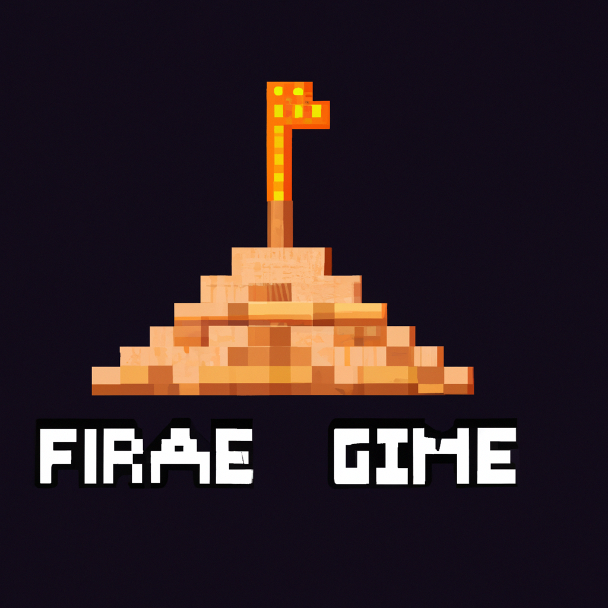

The Foundation. The Game
Today I'm excited to share news about the upcoming release of "The Foundation" - a new science-fiction video game by Interval Studios! This is an ambitious project that will take players on a journey across many unique and diverse planets as they search for clues to complete the enigmatic game story.
The Foundation is set in a futuristic universe, where technology has advanced rapidly over the centuries and space exploration has become commonplace. Players will be placed in the role of an interstellar explorer, tasked with travelling to various planets in search of answers and solutions for puzzles related to an underlying mystery. Every world has its own challenges and secrets, from deserts filled with hostile creatures to tropical paradises rich with ancient ruins – so every step could lead you closer to completing your mission.
As fans of Isaac Asimov's classic stories about galactic empires, we were inspired by his work when creating this game. We wanted players not just to go on sci-fi adventures but also explore ethical dilemmas – which makes "The Foundation" the perfect companion for everyone who enjoys deep storytelling games! So stay tuned: we'll have more news soon about this exciting new release!